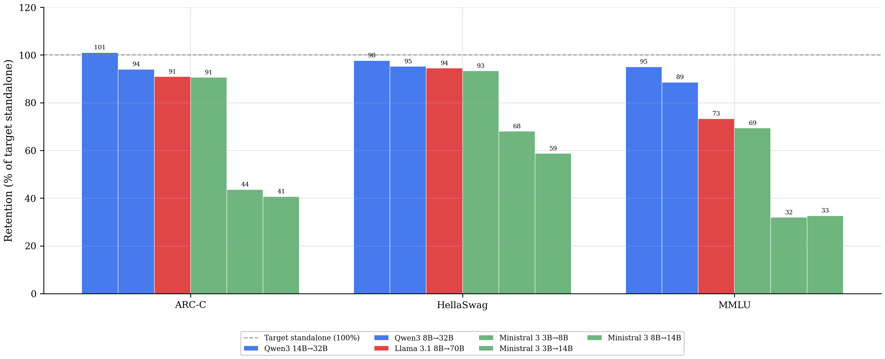
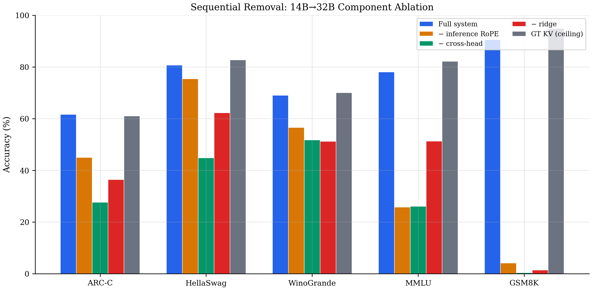
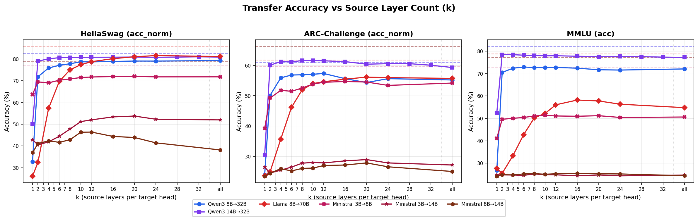
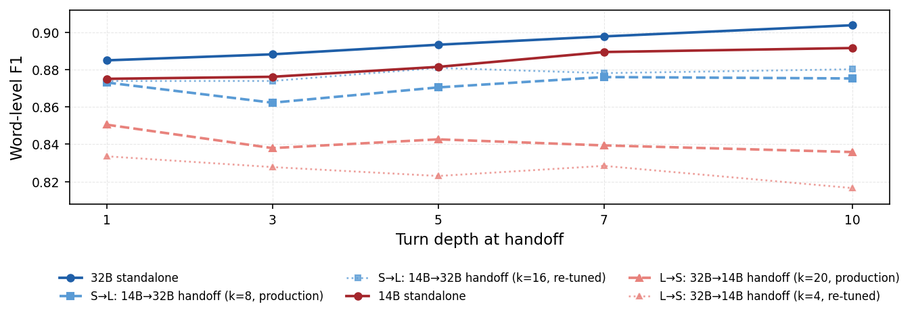
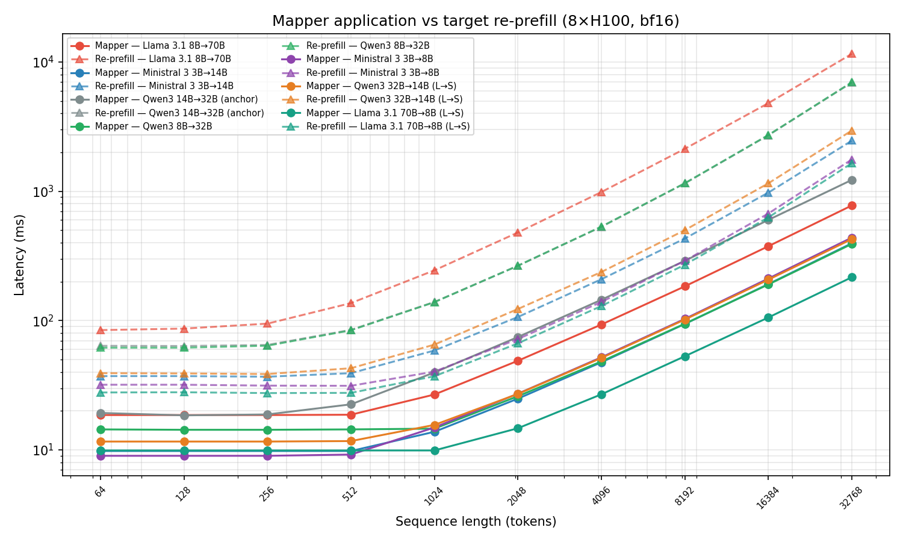

把prefill的产物直接交给另一个模型用，可以比预想简单得多：在共享KV头数与每头维度的模型对之间，跨模型键值关系大体是线性的，一个逐头闭式岭回归就能把源模型的缓存转换成目标模型期望的格式，不需要任何基于梯度的训练。
整套管线只有三步，选源层、剥掉位置旋转、解一次线性方程，用一个500条序列的小校准集就能拟合完成。三个家族六对模型的评测里，四对保住了接收方独立预填充73–98% 的准确率；两对失效的配对则暴露出更有价值的规律，决定成败的不是重建误差有多大，而是误差落在了注意力敏感的哪个方向上。
长期运行的智能体会话让上下文越滚越长，多模型编排又把请求分散到家族内不同尺寸的成员上：成本与质量之间的级联、会话中途切换模型、按难度路由，都要求一段对话里换用不同规模的模型。每换一次，接收方就要对整段累积上下文重新执行一次prefill。prefill是生成之前填充KV缓存的前向传播，成本随模型规模和prompt长度增长；同模型内部还有前缀缓存可以复用，跨模型没有对应机制，缓存只能从零再算一遍。
既然prefill的输出就是KV缓存，跨模型复用它就归结为一个表示问题：把源模型的KV缓存转换成目标模型期望的格式。当两个模型共享KV头数与每头维度时，就构成匹配KV（matched-KV）配对，这个条件与层数、参数量的差距无关，家族内的大模型与小模型常常天然满足。映射是双向的：小模型到大模型可以换取质量，大模型到小模型则直接降低成本。
已有的跨模型KV复用方案都要付出额外代价：有的为每一对模型训练神经融合器，有的学习每种模型的潜空间适配器，有的只替换小模型的注意力模式而不迁移缓存值，还有的要求两个模型架构完全相同，共同点是依赖梯度训练或较强的架构假设。真正没有被回答的问题是：跨模型键值关系是否简单到足以支持闭式、免训练的映射。
先探测跨模型KV之间到底有没有可用的结构。以Qwen3为例，对三类缓存分别拟合单源普通最小二乘回归：模型实际使用的键、用旋转矩阵的逆剥掉位置信息之后的键，以及本身不带位置编码的值。每个（源层、目标层、头）三元组在token级别拟合一次，用源模型的逐token特征向量去预测目标模型的对应特征，再用决定系数R²衡量拟合质量，并对目标头取平均。

热力图给出四个定性规律。第一，最可预测的目标层上单个线性回归已经能解释大部分方差，Qwen3 14B→32B在剥掉位置信息的键上峰值达到R²=0.81，差距更大的8B→32B也有0.65。第二，两个模型越接近，对角线越清晰，架构与深度差距越大模式越弥散。第三，位置旋转会污染拟合，剥掉RoPE之后对角线明显更干净，这直接促成了后面的位置与内容分解。第四，键比值更可预测，两者头平均R²通常相差0.2左右。
单个源层并不够用，互补信息分散在多个源层里，于是用贪心前向选择逐层加入：每次挑让R²增幅最大的那一层。在Qwen3 14B→32B上，只取一层只能达到全层R²的66%（剥掉位置信息的键）和42%（值），收益集中在第一层到第四层，到第六层已经达到全层水平的92.3% 和87.7%。这说明少量源层就能拿到绝大部分信息，源层数因此成为一个可以逐对扫描的超参数。
绝对数值同样清楚：键的R²从只取一层时的0.5572升到取八层的0.7914，取全部源层为0.8451；值的R²则从0.3249升到0.6541与0.7645。这条曲线既是后面top-k源层选择的依据，也说明跨模型KV的线性结构不是偶然的噪声级现象。

映射器对每个目标（层、头）单独拟合：先把该目标层选出的top-k个源层的键值拼接成输入，再用独立的两组岭回归把键和值分别投影到目标空间。整套映射对所有目标层与所有头重复一遍，每一次都是闭式线性求解，没有反向传播，也不需要保存优化器状态。图4是单个（层、头）的示意。

源模型与目标模型在层数、头维度甚至KV头数上都可能不同，逐头独立拟合正是为了吸收这些差异。把N个校准token堆叠成设计矩阵后，用岭回归而不是普通最小二乘：源层数较大时特征维度可以达到数万，而且选出来的源层彼此高度相关，正规方程接近奇异，正则项让求逆保持数值稳定，引入的偏差可以忽略。正则系数取 λ=0.01，这个取值在后来的敏感度扫描中被证明处在宽平台区。
求解之前先对输入与输出做中心化，闭式解给出的因此是斜率，偏置再由均值恢复。这样做还有一个好处：同一套矩阵分解可以在该目标层的所有头之间共享，省掉大量重复计算。
校准集很小：500条长度1,024的FineWeb-Edu序列并做stride-4子采样，每个目标头对应约12.8万个token。代价主要落在拟合而不是推理，单台8×H100节点上拟合一对模型大约需要47到87分钟；由于最耗时的矩阵构造对每个目标层只算一次并在该层所有头之间共享，拟合时间随目标头数近似次线性增长。映射器本身也不算大，各配对的总参数为1.01至3.36B，存储占用4到12GB。
第一个关键设计是跨层源层选择。源与目标层数不同，对给定的目标层来说并非所有源层都同样有信息量。做法是按剥掉位置旋转后键与值的头平均R²选出前k个源层，把它们的键值特征拼接起来再交给岭回归；同一目标层内的所有头共享这组源层，信息因此可以跨头流动。k逐对扫描确定，是这套方法里唯一的离散结构选择。
第二个关键设计是内容空间映射，也是它能外推到长上下文的原因。标准位置编码给查询和键施加与位置相关的旋转，缓存里保存的是旋转之后的键。做法是先把源的位置旋转剥掉，在无位置空间里完成线性变换，再按目标位置重新编码：记源位置旋转为R源(t)、目标位置旋转为R目(t)，映射过程即R目(t)·(W·R源⁻¹(t)·K源(t) + b)，其中W是该头的权重矩阵、b是偏置。校准阶段的目标值同样在剥掉自身旋转之后构建，因此权重完全在无位置空间里拟合，而旋转矩阵是正交矩阵，求逆的代价可以忽略。如果直接把映射器拟合在带旋转的键上，权重会被绑死在拟合时见过的那1,024个token位置上，短上下文评测看起来正常，一旦服务到32K提示就会出现拟合与推理的错配。值不携带位置编码，直接映射即可。
评测覆盖三个匹配KV家族：Qwen3、Llama 3.1、Ministral 3，全部使用密集全注意力，源与目标在跨规模时共享KV头数与每头维度，因此每一个目标层都能收到映射后的缓存。模型按补全模式评测，五个准确率基准是ARC-Challenge、HellaSwag、WinoGrande、MMLU与GSM8K，另外用WikiText-2的困惑度衡量语言建模损失，用CoQA测多轮交接。
保留率的定义是迁移之后准确率除以目标模型独立运行的准确率。由于各基准的随机水平并不相同，这里同时给出归一化保留率：把随机水平折算成0%、目标模型自身的准确率折算成100%，这样不同基准之间才可比。每对的源层数k在1、2、4、6、8、10、12、16、20、24与全部之间扫描，按四个对数似然类基准准确率的均值来选，出现接近平手时偏向较大的k以保证覆盖度；GSM8K、CoQA多轮与延迟都不参与这个选择。
六个配对明显分成两个梯队。第一梯队的四对保留73–98% 的平均准确率：Qwen3 14B→32B达到97.6%，Qwen3 8B→32B为87.5%，参数比最悬殊的Llama 3.1 8B→70B也有72.8%，Ministral 3B→8B为76.2%，其中Qwen3 14B→32B在ARC-C上甚至略微超过目标模型自身。第二梯队的Ministral 8B→14B与3B→14B掉到41.6% 与44.2%，归一化之后只剩11–15%，GSM8K几乎归零。匹配KV因此只是成功的相关条件，而不是充分条件，两梯队之间的差别正是后面两节要解释的对象。

| 家族 | 配对（k） | 平均 | 归一化平均 | ARC-C | HellaSwag | WinoGrande | MMLU | GSM8K |
|---|---|---|---|---|---|---|---|---|
| 随机水平 | - | - | - | 25% | 25% | 50% | 25% | ≈0% |
| Qwen3 | 14B → 32B (8) | 97.6% | 96.3% | 101.0% | 97.6% | 98.5% | 95.0% | 95.6% |
| Qwen3 | 8B → 32B (12) | 87.5% | 80.7% | 94.0% | 95.2% | 91.0% | 88.5% | 68.8% |
| Llama 3.1 | 8B → 70B (20) | 72.8% | 62.9% | 90.9% | 94.4% | 87.1% | 73.3% | 18.2% |
| Ministral 3 | 3B → 8B (全部) | 76.2% | 65.9% | 90.6% | 93.3% | 91.3% | 69.4% | 36.6% |
| Ministral 3 | 3B → 14B (20) | 44.2% | 14.7% | 43.6% | 68.0% | 74.0% | 32.0% | 3.2% |
| Ministral 3 | 8B → 14B (12) | 41.6% | 11.1% | 40.7% | 58.7% | 74.2% | 32.7% | 1.6% |
在保留率最高的Qwen3 14B→32B上逐项移除组件，任何退化都最容易暴露。贡献最大的是跨层源层选择：把源层数从8降到1，键的R²从0.79掉到0.56，ARC-C与HellaSwag的准确率随之下滑。
内容空间映射的代价则是基准相关的。关掉推理端的位置重编码，让拟合与推理之间出现错配，MMLU与GSM8K会塌到接近随机水平（25.79与4.17），而HellaSwag只掉约5个百分点。这说明位置处理错位伤害最大的是需要精细对齐的题目，而不是所有任务同步退化；如果拟合与推理两端都保留旋转，退化反而很小，因为那时权重虽然被绑在位置上，至少是自洽的。

校准过程本身相当稳健：正则系数跨四个数量级都存在宽平台区，只有取到1时才崩掉；校准样本从50条扫到1,000条，200条之后基本持平，即便只用50条也只比生产配置差1.6个百分点以内。真正有代价的是校准领域：换成CodeAlpaca，HellaSwag掉5.24个百分点，换成Wikipedia则落在噪声范围内。源层数k的敏感度由图7给出完整的扫描曲线。

| 配置 | ARC-C | HellaSwag | WinoGrande | MMLU | GSM8K | PPL |
|---|---|---|---|---|---|---|
| 完整（k=8、岭回归、内容空间） | 61.60 | 80.70 | 68.98 | 78.09 | 90.98 | 7.33 |
| 去掉推理端RoPE | 44.97 | 75.39 | 56.59 | 25.79 | 4.17 | 7.70 |
| 去掉全部RoPE（拟合与推理） | 61.09 | 80.73 | 68.59 | 77.70 | 90.98 | 7.35 |
| 再去掉跨层选择（k=1） | 27.65 | 44.81 | 51.78 | 26.07 | 0.38 | 22.73 |
| 再去掉岭回归正则 | 36.43 | 62.26 | 51.22 | 51.26 | 1.44 | 9.86 |
很自然会用校准阶段的R²来预判迁移质量，但跨对比较时它几乎没有预测力。Llama 3.1 8B→70B的键R²在校准数据上是0.84，小模型到大模型方向保留了94% 的HellaSwag，反方向却只剩37%；Ministral 3B→8B的校准键R²同样是0.84，两个方向都能保住93%。同样的拟合质量，下游结果相差一倍以上，说明R²捕捉的不是决定成败的那个量。
原因在于R²对每一个键值通道等权地衡量重建误差，而注意力并不等权：它拿键与目标的查询做内积，再按得到的注意力分布去加权值。真正决定下游行为是否保住的是映射缓存算出来的注意力输出，因此这里直接用映射缓存与真值缓存算出的注意力输出的余弦相似度来度量，并对层与头取平均。在三个家族12组配对评估上（六对小到大、六对大到小），平均余弦与HellaSwag保留率的Pearson相关系数为 +0.57，而校准域键R²几乎不相关，为 -0.20。R²仍然适合配对内部比较，比如用来挑源层，但不适合跨配对做部署筛选。
余弦给出的是配对级的注意力保真度，要解释为什么两个R²相近的映射器余弦不同，就要看残差误差在头内落在哪里。键的误差被投影到目标查询矩阵的右奇异向量上，并按对应奇异值的平方加权，再除以平均误差，得到键的误差集中度；值的误差则按该位置真值注意力权重的平方加权，同样除以平均位置误差。两个量高于1，意味着误差正好落在注意力读取的方向上，低于1则意味着误差落在注意力忽略的方向上。这个度量把重建误差从标量变成了有方向的量。
既然线性映射在两对Ministral上失效，自然的追问是非线性映射器能不能救回来。做法是在同样的均方误差目标上，为每个（目标层、头、键或值）训练一个两层、每层1,024个ReLU单元、用Adam优化的MLP，推理时直接替换岭回归；校准数据与下游评测管线完全不变，因此唯一变化的是映射器的函数形式。
结果很有分寸。在岭回归本来就成功的配对上，MLP略微不如：Qwen3 14B→32B从97.6% 降到97.3%，Ministral 3B→8B从93.3% 降到91.8%。在岭回归失效的配对上，MLP把HellaSwag保留率抬高24.3与36.8个百分点，分别达到92.3% 与95.5%，四对全部回到90% 以上。换句话说，跨模型键值关系已经线性的场合，线性解就够了，非线性只在必要时才体现价值，并没有全面压过岭回归。
| 配对 | 岭回归 | MLP | 差值 |
|---|---|---|---|
| Qwen3 14B → 32B | 97.6% | 97.3% | -0.3 pp |
| Ministral 3B → 8B | 93.3% | 91.8% | -1.5 pp |
| Ministral 3B → 14B | 68.0% | 92.3% | +24.3 pp |
| Ministral 8B → 14B | 58.7% | 95.5% | +36.8 pp |
对照实验只换映射器，其余全部固定，于是可以直接看误差结构的变化。在失效配对上，岭回归在评测分布上的键R²深度为负，分别是 -7.81与 -3.22，说明用校准集拟合出来的线性映射无法外推到这批token；MLP把这两个数字抬高了7.62与3.08，逼近但仍未越过零点。与此同时，键误差集中度平均下降约2.5，注意力输出余弦上升约0.45，HellaSwag保留率随之提高24.3与36.8个百分点。
反过来，在本来就成功的配对上这些量变化很小，保留率也不跟着走：Ministral 3B→8B的集中度与余弦都有改善，HellaSwag却仍然下降。可见把误差搬到注意力不关心的方向并不自动带来收益，只有当原本错位的误差大到足以绑住下游行为时，重分配才会体现为准确率。这也解释了为什么在线性关系已经成立的地方，非线性的收益会消失。
| 配对 | 岭回归键R² | Δ键R² | 岭回归值R² | Δ值R² | 岭回归HellaSwag | Δ HellaSwag | Δ键集中度 | Δ值集中度 | Δ余弦 |
|---|---|---|---|---|---|---|---|---|---|
| Qwen3 14B → 32B | 0.75 | -0.05 | 0.56 | -0.06 | 97.6% | -0.3 pp | -0.03 | +0.00 | -0.03 |
| Ministral 3B → 8B | -0.10 | +0.77 | 0.59 | -0.09 | 93.3% | -1.5 pp | -0.45 | -0.08 | +0.07 |
| Ministral 3B → 14B | -7.81 | +7.62 | 0.17 | +0.27 | 68.0% | +24.3 pp | -2.31 | -0.23 | +0.41 |
| Ministral 8B → 14B | -3.22 | +3.08 | 0.19 | +0.37 | 58.7% | +36.8 pp | -2.71 | -0.23 | +0.48 |
会话中途切换模型意味着同一段对话在源与目标之间来回交棒，误差会不会逐轮累积是能否落地的关键。在Qwen3 14B与32B之间用CoQA评测：100段对话、每段约15轮、覆盖五个领域，逐轮用F1打分，把映射器与目标独立模型在同一轮上的F1差距定义为漂移。两个方向的漂移都很小：小到大方向的差距在第1轮到第10轮之间扩大1.7个百分点，其中映射器自身保持稳定，是32B的天花板在上升；大到小方向按每轮0.33个百分点线性增长。就这一对模型而言，十轮之内不会出现级联失效，但线性漂移在超长会话中仍会累积。为多轮任务专门重调源层数，最多只影响2.0个百分点的漂移。

要省掉的是接收方的prefill，因此直接对比端到端重预填充与KV缓存迁移的延迟。映射器用一次按层的批量矩阵乘替代目标模型的整个transformer主体，接收方拿到映射后的缓存就能直接解码。在Qwen3 14B与32B之间，序列长度64、8K、32K三个点上，小到大方向加速4到25倍，大到小方向加速3到7倍。

32K序列上，小到大方向的迁移耗时277.6毫秒，重预填充需要6,975.3毫秒；大到小方向是427.1毫秒对2,952.7毫秒。把七个配对、从64到32,768的十个序列长度全部算进去，合计70个格子里映射器全部更快，加速比区间为2.7到25.1倍；序列越长，映射器相对重预填充的优势越大，因为它的耗时增长比接收方的prefill慢得多。
| 序列长度 | 小到大：映射器 | 小到大：重预填充 | 加速 | 大到小：映射器 | 大到小：重预填充 | 加速 |
|---|---|---|---|---|---|---|
| 64 | 14.0 ms | 61.7 ms | 4× | 11.6 ms | 39.2 ms | 3× |
| 8K | 67.8 ms | 1154.8 ms | 17× | 101.9 ms | 501.0 ms | 5× |
| 32K | 277.6 ms | 6975.3 ms | 25× | 427.1 ms | 2952.7 ms | 7× |
把范围扩大到全部七个配对，在32,768 token这一点上，迁移耗时从216毫秒到777毫秒，重预填充从1,652毫秒到11,562毫秒，加速比落在一个很宽的区间里。接收方越小，映射器本身越小、耗时越低，所以大到小方向的绝对耗时更低；而小到大方向因为要跳过的prefill更重，相对收益反而更大。
| 方向 | 家族 | 配对（k） | 迁移 @32K | 重预填充 @32K | 加速比区间 |
|---|---|---|---|---|---|
| 小到大 | Qwen3 | 14B → 32B (8) | 278 ms | 6,975 ms | 4.4–25.1× |
| 小到大 | Qwen3 | 8B → 32B (12) | 392 ms | 6,975 ms | 4.3–17.8× |
| 小到大 | Llama 3.1 | 8B → 70B (20) | 777 ms | 11,562 ms | 4.5–14.9× |
| 小到大 | Ministral 3 | 3B → 14B (20) | 396 ms | 2,465 ms | 3.8–6.2× |
| 小到大 | Ministral 3 | 3B → 8B (全部) | 438 ms | 1,764 ms | 2.7–4.0× |
| 大到小 | Qwen3 | 32B → 14B (20) | 427 ms | 2,953 ms | 3.3–6.9× |
| 大到小 | Llama 3.1 | 70B → 8B (10) | 216 ms | 1,652 ms | 2.8–7.6× |
结论成立的范围要说清楚。校准只用了FineWeb-Edu这一个来源，虽然测过替换成Wikipedia或CodeAlpaca的代价，但两种替换都无法把主题与语域分开，因此无法界定校准数据局限在医学、法律等单一领域时的边界。每对的源层数是在同一批对数似然基准上选出来的，把某个基准纳入选择最多把它自己的准确率抬高2.49个百分点，留出评估可以缓解这一点，但不能替代真正的样本外选择。
闭式映射器对源与目标的维度并没有结构性要求，但实测的六个配对在构造上全部是匹配KV，失配情形没有覆盖，因此匹配KV到底是不是必要条件仍是开放问题。评测范围也限定在密集全注意力模型的同家族迁移，滑窗等受限注意力架构、以及同时携带状态空间状态与KV的注意力与循环混合架构都不在覆盖范围内。
后续方向有四条：系统比较MLP、混合专家以及直接优化注意力输出余弦的对齐目标；寻找在拟合之前就能估计可迁移性的信号，让它成为部署前的筛选指标，而不用先花几十分钟拟合一遍；把闭式映射推广到Qwen3到Llama 3.1这样的跨家族场景；以及把架构之外的因素，例如训练数据重叠与微调配方，纳入可迁移性的解释。
参考：https://arxiv.org/html/2608.03893v1